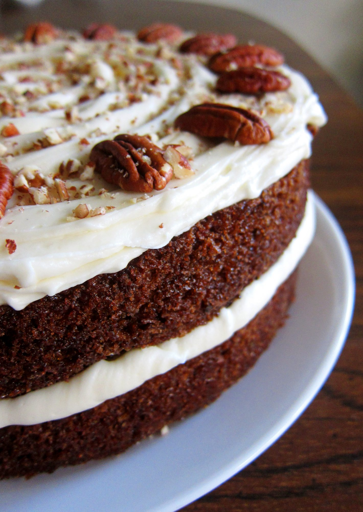

Chocolate Chip Pancakes

Description
I've tried many carrot cakes, and this is my favorite recipe. If you don't like pecans, feel free to leave them out.
Ingredients
Cake
-
4 eggs
-
1¼ cups vegetable oil
-
2 cups white sugar
-
2 teaspoons vanilla extract
-
2 cups all-purpose flour
-
2 teaspoons baking soda
-
2 teaspoons baking powder
-
½ teaspoon salt
-
2 teaspoons ground cinnamon
-
3 cups grated carrots
-
1 cup chopped pecans
Frosting
-
½ cup butter, softened
-
8 ounces cream cheese, softened
-
4 cups confectioners' sugar
-
1 teaspoon vanilla extract
-
1 cup chopped pecans
Steps
-
Preheat oven to 350 degrees F (175 degrees C). Grease and flour a 9x13 inch pan.
-
In a large bowl, beat together eggs, oil, white sugar and 2 teaspoons vanilla. Mix in flour, baking soda, baking powder, salt and cinnamon. Stir in carrots. Fold in pecans. Pour into prepared pan.
-
Bake in the preheated oven for 40 to 50 minutes, or until a toothpick inserted into the center of the cake comes out clean. Let cool in pan for 10 minutes, then turn out onto a wire rack and cool completely.
-
To Make Frosting: In a medium bowl, combine butter, cream cheese, confectioners' sugar and 1 teaspoon vanilla. Beat until the mixture is smooth and creamy. Stir in chopped pecans. Frost the cooled cake.